A forma segue a função. Esse princípio do design de produtos tem aplicação clara na comunicação com dados. Quando se trata da forma e função de nossas visualizações de dados, pensamos primeiro no que queremos que nosso público faça com os dados (função) e então criamos uma visualização (forma) que permita isso com facilidade. Neste capítulo, discutimos como os conceitos tradicionais do design podem ser aplicados à comunicação com dados. Vamos explorar affordances, acessibilidade e estética, recorrendo a vários conceitos já apresentados, mas examinando-os através de lentes um pouco diferentes. Também vamos discutir estratégias para obter a aceitação do público para seus designs visuais.
Os designers conhecem os fundamentos do bom design, mas também como confiar nos seus olhos. Talvez você pense: Mas não sou designer! Pare de pensar assim. Você consegue reconhecer um design inteligente. Conhecendo alguns aspectos e exemplos comuns do bom design, vamos infundir confiança em seus instintos visuais e aprender algumas dicas concretas a seguir e ajustes a fazer quando as coisas não parecerem totalmente corretas.
No campo do design, os especialistas falam que os objetos têm “affordances”.
São aspectos inerentes ao design que tornam óbvio como o produto deve ser usado. Por exemplo, uma maçaneta permite ser girada, um botão permite ser pressionado e uma corda permite ser puxada. Essas características sugerem como interagir com o objeto ou operá-lo. Quando affordances suficientes estão presentes, o bom design desaparece e você nem percebe.
Como exemplo de affordances em ação, vamos examinar a marca OXO. Em seu site, eles expressam sua característica distintiva como “Design Universal” — a filosofia de fazer produtos fáceis de usar para o maior espectro possível de usuários. De particular relevância para nossa conversa aqui são seus utensílios de cozinha (já comercializados como “instrumentos que você consegue manejar”). Os utensílios são projetados de tal modo que só há uma maneira de pegá-los — a maneira correta. Assim, os utensílios de cozinha OXO funcionam do jeito certo, sem que a maioria reconheça que isso se dá graças ao design cuidadoso (Figura 5.1).
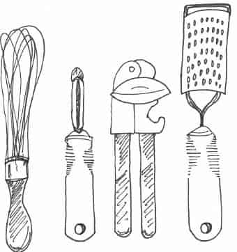
FIGURA 5.1 UTENSÍLIOS DE COZINHA OXO
Vamos considerar como podemos traduzir o conceito de affordances para a comunicação com dados. Podemos aproveitar as affordances visuais para indicar ao nosso público como usar e interagir com nossas visualizações.
Vamos discutir três lições específicas com esse fim: (1) realçar o que é importante, (2) eliminar as distrações e (3) criar uma clara hierarquia de informações.
Já demonstramos o uso de atributos pré-atentivos para chamar a atenção do público para onde queremos que ele foque: em outras palavras, realçar o que é importante. Vamos continuar a explorar essa estratégia. O fundamental aqui é realçar apenas uma fração do visual, pois os efeitos do realce são diluídos à medida que a porcentagem realçada aumenta. Em Universal Principles of Design, sem tradução no Brasil (Lidwell, Holden, and Butler, 2003), recomenda-se que, no máximo, 10% do design visual seja realçado. Eles oferecem as seguintes diretrizes:
Negrito, itálico e sublinhado: use para títulos, subtítulos, legendas e sequências curtas de palavras, para diferenciar elementos. Negrito geralmente é preferível em relação ao itálico e ao sublinhado, pois adiciona ruído mínimo ao design, ao passo que realça claramente os elementos escolhidos. O itálico adiciona ruído mínimo, mas não destaca tanto e é menos legível. O sublinhado adiciona ruído e compromete a legibilidade; portanto, deve ser usado moderadamente (se for usado).
CAIXA e fonte: texto em maiúsculas em sequências curtas de palavras é facilmente visualizado, o que pode funcionar bem quando aplicado a títulos, legendas e palavras-chave. Evite o uso de fontes diferentes como técnica de realce, pois é difícil conseguir uma diferença perceptível sem atrapalhar a estética.
Cor é uma técnica de realce eficiente quando usada moderadamente, geralmente em conjunto com outras técnicas de realce (por exemplo, negrito).
Inverter elementos é eficaz para atrair a atenção, mas pode adicionar ruído considerável a um design, de modo que deve ser usado moderadamente.
Tamanho é outro modo de chamar a atenção e sinaliza importância.
Na lista acima, omiti “piscado ou brilho”, que Lidwell et al. incluem, com instruções para uso somente a fim de indicar informações altamente importantes que exigem resposta imediata. Não recomendo usar piscado ou brilho na comunicação com dados para finalidades explanatórias (isso tende a ser mais irritante do que útil).
Note que os atributos pré-atentivos podem ser sobrepostos; portanto, se houver algo realmente importante, você pode sinalizar isso e chamar a atenção tornando maior, colorido e negritado.
Vamos ver um exemplo de uso eficaz de realce na visualização de dados. Um gráfico semelhante ao da Figura 5.2 foi incluído no artigo do Pew Research Center de fevereiro de 2014, intitulado (em inglês) “Novos Dados do Censo Mostram que Mais Americanos Estão Se Casando, mas Quase Todos têm Ensino Superior”.
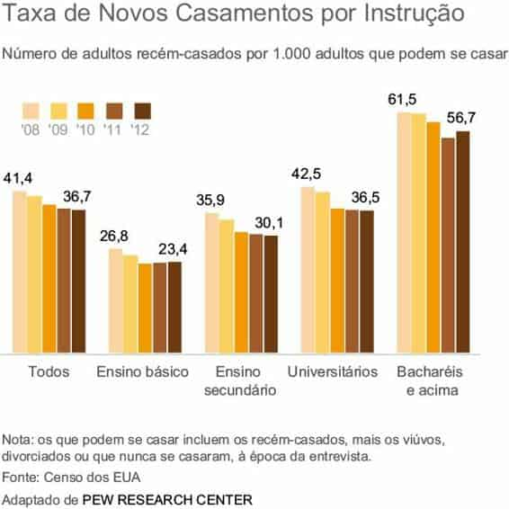
FIGURA 5.2 GRÁFICO ORIGINAL DO PEW RESEARCH CENTER
Baseada no artigo que a acompanha, a Figura 5.2 demonstra que o aumento de 2011 a 2012 observado no total de novos casamentos ocorreu principalmente devido a um aumento nos que têm bacharelado ou mais (não parece ser um aumento baseado na tendência “Todos” mostrada, mas vamos ignorar isso). Contudo, o design da Figura 5.2 não chama muito nossa atenção para isso. Em vez disso, minha atenção é chamada para as barras de 2012 dentro dos vários grupos, pois são representadas em uma cor mais escura que o resto.
Mudar o uso de cor nesse visual pode redirecionar completamente nosso foco. Veja a Figura 5.3.
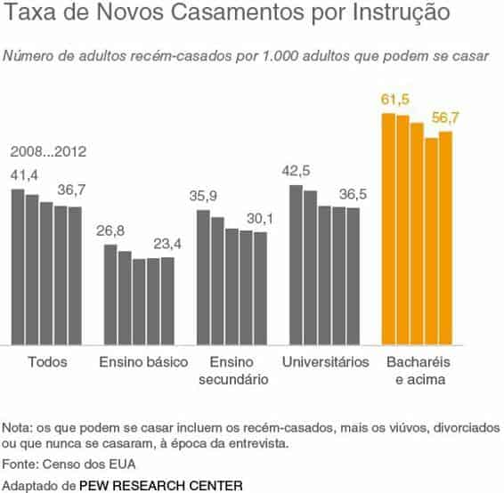
FIGURA 5.3 REALCE O QUE FOR IMPORTANTE
Na Figura 5.3, a cor laranja foi usada para realçar os pontos de dados de quem tem bacharelado ou mais. Tornando tudo mais cinza, o realce fornece um claro sinal de onde devemos concentrar nossa atenção. Vamos voltar a esse exemplo em breve.
Enquanto realçamos as partes importantes, também queremos eliminar as distrações. Em seu livro Airman’s Odyssey, sem tradução no Brasil, Antoine de Saint‐Exupery disse uma frase memorável: “Você sabe que atingiu a perfeição, não quando não tem mais nada a acrescentar, mas quando não tem nada a tirar” (Saint‐Exupery, 1943). Quando se trata da perfeição do design na visualização de dados, a decisão do que cortar ou desenfatizar pode ser ainda mais importante do que incluir ou realçar.
Para identificar as distrações, pense na saturação e no contexto. Já discutimos a saturação: são os elementos que ocupam espaço, mas não acrescentam informações às nossas apresentações. Contexto é o que precisa estar diante de seu público, a fim de que o que se quer comunicar faça sentido. Para o contexto, use a quantidade certa — nem muito, nem pouco. Considere, em linhas gerais, qual informação é fundamental e qual não é. Identifique informações ou itens desnecessários, extrínsecos ou irrelevantes. Determine se existem coisas que podem atrapalhar seu ponto ou mensagem principal.
Todos eles são candidatos à eliminação.
Veja algumas considerações específicas para ajudá-lo a identificar possíveis distrações:
Cada passo na redução e na retirada de ênfase faz com que o restante se destaque. Nos casos em que você não tiver certeza se precisará do detalhe que está pensando em cortar, veja se há um modo de incluí-lo sem retirar a força de sua mensagem principal. Por exemplo, em uma apresentação de slides, você pode colocar conteúdo no apêndice para que esteja lá, caso precise, mas não atrapalhe seu ponto principal.
Vamos discutir novamente o exemplo do Pew Research. Na Figura 5.3, usamos cor moderadamente para destacar a parte importante de nosso visual.
Podemos melhorar ainda mais esse gráfico, eliminando as distrações, como ilustrado na Figura 5.4.
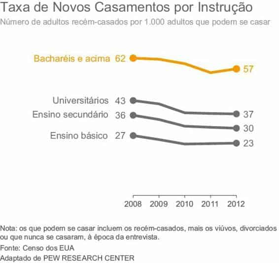
FIGURA 5.4 ELIMINE AS DISTRAÇÕES.
Na Figura 5.4, várias alterações foram feitas para eliminar as distrações. A maior mudança foi do gráfico de barras para um gráfico de linhas. Como já discutimos, os gráficos de linhas normalmente facilitam a visualização de tendências ao longo do tempo. Essa mudança também tem o efeito de reduzir os elementos visualmente, pois os dados que antes ocupavam cinco barras são reduzidos a uma linha com os pontos extremos realçados. Quando consideramos todos os dados que estão sendo representados, caímos de 25 barras para 4 linhas. A organização dos dados como um gráfico de linhas permite usar apenas um eixo x, que pode ser aproveitado em todas as categorias. Isso simplifica o processamento das informações (em vez de ver os anos em uma legenda à esquerda e depois ter de transladar entre os vários grupos de barras).
A categoria “Todos”, incluída no gráfico original, foi eliminada. Ela era a junção de todas as outras categorias; portanto, mostrá-la separadamente era redundante, sem acrescentar valor. Isso nem sempre acontece, mas aqui ela não acrescentava nada de interessante à história.
As vírgulas decimais nas legendas de dados foram eliminadas pelo arredondamento para o próximo algarismo inteiro. Os dados que estão sendo representados são o “Número de adultos recém-casados por 1.000”; acho estranho discutir o número de adultos usando casas decimais (frações de uma pessoa!). Além disso, a dimensão dos números e as diferenças visíveis entre eles significam que não precisamos do nível de precisão ou granularidade que as vírgulas decimais oferecem. É importante levar em conta o contexto ao tomar decisões como essa.
O itálico no subtítulo foi alterado para fonte normal. Não havia motivo para chamar a atenção para essas palavras. No original, achei que a separação espacial entre o título e o subtítulo também davam atenção indevida ao subtítulo; portanto, removi o espaçamento na remodelação.
Por fim, o realce da categoria “Bacharelado ou mais”, introduzido na Figura 5.3, foi preservado e ampliado para incluir o nome da categoria, além das legendas de dados. Como já vimos, esse é um modo de vincular componentes visualmente para nosso público, facilitando a interpretação.
A Figura 5.5 mostra o “antes e depois”.
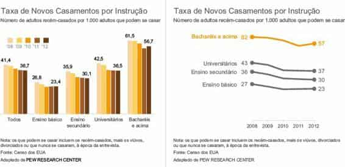
FIGURA 5.5 ANTES E DEPOIS
Realçando o material importante e eliminando as distrações, melhoramos sensivelmente esse visual.
Como discutimos no Capítulo 4, os mesmos atributos pré-atentivos que usamos para realçar o que é importante podem ser usados para criar uma hierarquia de informações. Podemos colocar visualmente alguns itens em primeiro plano e outros em segundo plano, indicando para nosso público a ordem geral com que deve processar a informação que estamos comunicando.
Em tabelas e gráficos, às vezes é útil usar o poder das supercategorias para organizar os dados e ajudar a fornecer a seu público uma construção para interpretá-los. Por exemplo, se você está examinando uma tabela ou gráfico que mostra um valor para 20 diferentes decomposições demográficas, pode ser útil organizá-las e legendá-las claramente em grupos ou supercategorias, como idade, raça, renda e instrução. Essas supercategorias fornecem uma organização hierárquica que simplifica o processo de assimilação da informação.
Vamos ver um exemplo onde foi estabelecida uma clara hierarquia visual e discutir as escolhas de design feitas para criá-la. Imagine que você é fabricante de carros. Duas dimensões importantes pelas quais você julga o sucesso de uma marca e modelo em particular são (1) satisfação do cliente e (2) frequência de problemas no carro. Um gráfico de dispersão poderia ser útil para visualizar como os modelos deste ano se comparam com a média do ano passado, de acordo com essas duas dimensões, como mostrado na Figura 5.6.
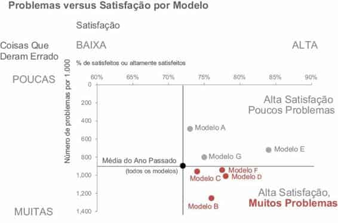
FIGURA 5.6 HIERARQUIA VISUAL DE INFORMAÇÕES CLARA
A Figura 5.6 nos permite ver rapidamente como os vários modelos deste ano se comparam com a média do ano passado, com base na satisfação e nos problemas. O tamanho e a cor da fonte e dos pontos de dados nos alertam onde prestar atenção e em que ordem geral. Vamos considerar a hierarquia visual de componentes e como ela nos ajuda a processar as informações apresentadas. Se eu anunciar a ordem na qual assimilo as informações, será da seguinte forma:
Primeiro, leio o título do gráfico: “Problemas versus Satisfação por Modelo”. O negrito de Problemas e Satisfação sinaliza que essas palavras são importantes, de modo que tenho esse contexto em mente ao processar o restante do visual.
Em seguida, vejo a legenda principal do eixo y: “Coisas Que Deram Errado”. Observo que elas vão de uma escala de poucas (em cima) até muitas (embaixo). Depois disso, noto os detalhes no eixo x horizontal: Satisfação, variando de baixa (à esquerda) até alta (à direita).
Então, sou atraída pelo ponto cinza escuro e pelas palavras “Média do Ano Passado” correspondentes. As linhas traçadas desse ponto até os eixos me permitem ver rapidamente que a média do ano passado foi em torno de 900 problemas por 1.000 e 72% de satisfeitos ou altamente satisfeitos. Isso fornece uma construção útil para interpretar os modelos deste ano.
Por fim, sou atraída por todo o vermelho no quadrante inferior direito. As palavras me informam que a satisfação é alta, mas que existem muitos problemas. Graças ao modo como o visual foi construído, está claro que são casos nos quais o nível de problemas é maior que a média do ano passado.
A cor vermelho reforça que isso é um problema.
Já discutimos as supercategorias para facilitar a interpretação. Aqui, as legendas de quadrante “Alta Satisfação, Poucos Problemas” e “Alta Satisfação, Muitos Problemas” funciona dessa maneira. Na ausência dela, eu poderia perder tempo processando os títulos e legendas de eixo e, finalmente, descobrir o que esses quadrantes representam, mas o processo é muito mais fácil quando os títulos incisivos estão presentes, eliminando completamente a necessidade desse processamento. Note que os quadrantes da esquerda não estão legendados; as legendas são desnecessárias porque nenhum valor cai ali.
Os pontos de dados e detalhes adicionais estão lá para contextualizar, mas foram colocados em segundo plano para reduzir o peso cognitivo e simplificar o visual.
Ao compartilhar esse visual com meu marido, sua reação foi “não foi nessa ordem que prestei atenção — fui direto para o vermelho”. Isso me fez pensar.
Primeiro, me surpreendi por ele te começado ali, pois é daltônico. Mas ele disse que o vermelho era diferente o suficiente de tudo mais no visual para ter chamado sua atenção. Segundo, já examinei tantos gráficos que está arraigado em mim começar com os detalhes: os títulos e as legendas de eixo, para entender o que estou olhando antes de chegar aos dados. Outras pessoas podem olhar mais rapidamente para o “e daí”. Se encararmos desse jeito, seremos atraídos primeiro para o quadrante inferior direito, pois o vermelho sinaliza importância e que se deve prestar atenção. Depois, talvez voltemos e leiamos alguns dos outros detalhes do gráfico.
Qualquer que seja o caso, a clara e cuidadosa hierarquia visual estabelece ordem para o público a fim de processar a informação em um visual complexo, sem achá-lo complicado. Para nosso público, por realçarmos o que é importante, eliminarmos as distrações e estabelecermos uma hierarquia visual, as visualizações de dados que criamos permitem o entendimento.
O conceito de acessibilidade diz que os designs devem ser úteis para pessoas com diversas habilidades. Originalmente, essa consideração valia para pessoas deficientes, mas com o passar do tempo se tornou mais genérica, e é dessa maneira que vou discuti-la aqui. Aplicada à visualização de dados, eu a considero como um design útil para pessoas com habilidades técnicas amplamente variadas. Você pode ser engenheiro, mas não é necessário ter feito engenharia para entender seu gráfico. Como designer, o ônus de tornar seu gráfico acessível é seu.
Uma visualização de dados bem projetada — como um objeto bem projetado — é fácil de interpretar e entender. Quando as pessoas têm dificuldade para entender algo, como interpretar um gráfico, elas tendem a se culpar. Na maioria dos casos, contudo, essa falta de entendimento não é culpa do usuário, e sim uma falha no design. Um bom design requer planejamento e reflexão. Acima de tudo, um bom design leva em conta as necessidades do usuário. Esse é outro lembrete para ter seu usuário — seu público — em mente ao projetar suas comunicações com dados.
Como exemplo de acessibilidade no design, vamos considerar o icônico mapa do metrô de Londres. Harry Beck produziu um design maravilhosamente simples em 1933, reconhecendo que a geografia acima do solo não é importante ao percorrer as linhas e eliminar as restrições que ela impunha.
Comparado com os mapas de metro anteriores, o design acessível de Beck produziu uma apresentação fácil de seguir que se tornou um guia essencial de Londres e um modelo para mapas de transporte em todo o mundo. É esse mesmo mapa, com pequenas modificações, que ainda serve Londres hoje.
Vamos discutir duas estratégias relacionadas à acessibilidade na comunicação com dados: (1) não complique demais e (2) o texto é seu amigo.
“Se é difícil ler, é difícil fazer”. Esse foi o veredito da pesquisa feita por Song e Schwarz na Universidade de Michigan, em 2008. Primeiro, eles apresentaram a dois grupos de alunos instruções para um regime de exercícios. Metade dos alunos recebeu as instruções escritas em fonte Arial, fácil de ler; a outra metade as recebeu em uma fonte cursiva chamada Brushstroke. Foi perguntado aos alunos quanto tempo a rotina de exercícios levaria e qual a probabilidade de eles a executarem. O veredito: quanto mais complicada a fonte, mais difícil os alunos achavam a rotina e menos provavelmente eles a executariam. Um segundo estudo, usando uma receita de sushi, teve resultados semelhantes.
Tradução para a visualização de dados: quando mais complicada ela parece, mais tempo o público acha que vai demorar para entender e menor a probabilidade de quererem entendê-la.
Como já discutimos, os affordances visuais podem ajudar nessa área. A seguir, trago mais algumas dicas para evitar que seus visuais e suas comunicações pareçam demasiadamente complicados:
Não se trata de simplificar demais, mas de não tornar as coisas mais complicadas do que precisam ser. Uma vez, presenciei uma apresentação de um conceituado PhD. O cara era obviamente inteligente. Quando ele pronunciou sua primeira palavra de cinco sílabas, fiquei impressionada com seu vocabulário. Mas à medida que essa linguagem acadêmica continuava, comecei a perder a paciência. Suas explicações eram desnecessariamente complicadas. Suas palavras eram desnecessariamente longas. Era preciso muita energia para prestar atenção. Achei difícil ouvir o que ele estava dizendo à medida que minha irritação crescia.
Além de irritar nosso público, tentando parecer inteligente, corremos o risco de fazê-lo parecer burro. Em ambos os casos, não é uma boa experiência de usuário para nosso público. Evite isso. Se você achar difícil determinar se está complicando demais as coisas, procure a ajuda ou opinião de um amigo ou colega.
O uso cuidadoso de texto ajuda a garantir que sua visualização de dados seja acessível. O texto tem várias funções na comunicação com dados: utilize-o para legendar, apresentar, explicar, reforçar, destacar, recomendar e contar uma história.
Alguns tipos de texto definitivamente devem estar presentes. Presuma que todo gráfico precisa de um título e todo eixo também precisa (exceções a essa regra serão extremamente raras). A ausência desses títulos — não importa o quanto você ache claro, a partir do contexto — faz seu público parar e perguntar o que está vendo. Em vez disso, legende explicitamente a fim de que ele possa usar o poder do cérebro para entender a informação, em vez de gastá-lo tentando descobrir como vai ler o visual.
Não presuma que duas pessoas olhando a mesma visualização de dados chegarão à mesma conclusão. Se há uma conclusão que você quer que seu público chegue, expresse-a com palavras. Use os atributos pré-atentivos para destacar as palavras importantes.
A barra de título na parte superior de seu slide do PowerPoint é um local precioso: use-a sabiamente! Esse é o primeiro item que seu público encontra na página ou tela e, apesar disso, frequentemente é usado para títulos descritivos redundantes (por exemplo, “Orçamento de 2015”). Em vez disso, use esse espaço para título de ação.
Se você tem uma recomendação ou algo que deseja que seu público saiba ou faça, coloque ali (por exemplo, “A despesa estimada de 2015 está acima do orçamento”).
Isso significa que o público não vai ignorar e também funciona para estabelecer expectativas para o que vem a seguir no restante da página ou tela.
Quando se trata de palavras em visualização de dados, às vezes pode ser útil anotar pontos importantes ou interessantes diretamente em um gráfico. A anotação pode ser usada para explicar nuances nos dados, destacar algo a se prestar atenção ou descrever fatores externos relevantes. Um de meus exemplos favoritos de anotação em visualização de dados aparece na Figura 5.7, por David McCandless, “Épocas de Pico de Términos de Acordo com as Atualizações de Status no Facebook”.
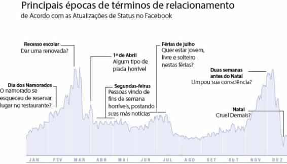
FIGURA 5.7 PALAVRAS USADAS SABIAMENTE
À medida que seguimos as anotações da esquerda para a direita na Figura 5.7, vemos um pequeno aumento no Dia dos Namorados, então grandes picos nas semanas de Recesso Escolar (com subtítulo esperto “Dar uma renovada?”).
Há um pico no Dia 1º de Abril. A tendência de términos nas segundas-feiras é destacada. Um aumento e queda suaves são observadas nas férias de julho (verão no hemisfério norte). Então, vemos um forte aumento perto das festas de fim de ano, mas um acentuado declínio no Natal, pois, claramente, terminar com alguém seria “Cruel Demais.”
Note como algumas palavras e frases escolhidas tornam esses dados acessíveis muito mais rapidamente.
Como nota adicional, na Figura 5.7, a orientação que apresentei antes sobre sempre colocar títulos nos eixos não foi seguida. Neste caso, foi proposital.
Mais interessante que a métrica específica que está sendo representada são os picos e vales relativos. Não legendando o eixo vertical (com título ou legendas), você simplesmente não pode ser apanhado em um debate sobre isso (O que está sendo representado? Como está sendo calculado? Eu concordo com isso?). Essa foi uma escolha de design consciente e não seria apropriada na maioria das situações; porém, como vemos neste caso, pode — em raras ocasiões — funcionar bem.
No contexto da acessibilidade via texto, vamos rever o exemplo dos tíquetes examinado nos Capítulos 3 e 4. A Figura 5.8 mostra onde estávamos depois de eliminarmos as legendas e chamarmos a atenção para onde queríamos que nosso público se concentrasse, via marcadores de dados e legendas.
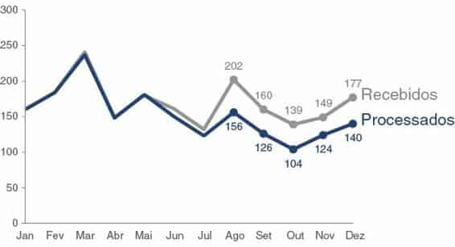
FIGURA 5.8 VAMOS REVER O EXEMPLO DOS TÍQUETES
A Figura 5.8 é bonita, mas não significa muito sem as palavras para nos ajudar a entendê-la. A Figura 5.9 resolve esse problema, acrescentando o texto necessário.
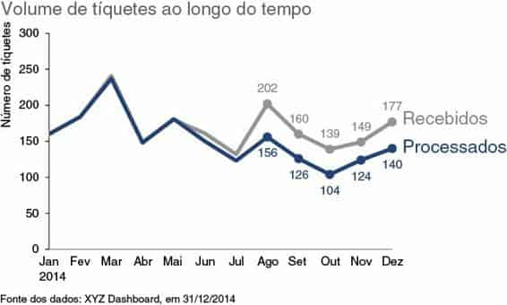
FIGURA 5.9 USE PALAVRAS PARA TORNAR O GRÁFICO ACESSÍVEL
Na Figura 5.9, acrescentamos as palavras necessárias: título do gráfico, títulos de eixo e uma nota de rodapé com a fonte dos dados. Na Figura 5.10, levamos isso um passo adiante, adicionando uma chamada para ação e uma anotação.
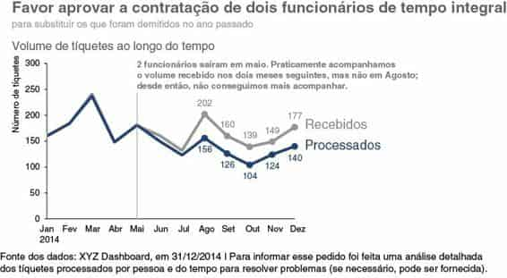
FIGURA 5.10 ADIÇÃO DE TÍTULO DE AÇÃO E ANOTAÇÃO
Na Figura 5.10, o uso pensado de texto torna o design acessível. Está claro para o público o que ele está vendo e no que deve prestar atenção e por quê.
Na comunicação com dados, é realmente necessário “fazer ficar bonito?” A resposta é um retumbante Sim. As pessoas percebem os designs estéticos como mais fáceis de usar do que os menos estéticos — sejam mais fáceis ou não. Estudos têm mostrado que os designs mais estéticos não são apenas percebidos como mais fáceis de usar, mas também são mais prontamente aceitos e utilizados com o passar do tempo, promovem o pensamento criativo e a solução de problemas, e estimulam relações positivas, tornando as pessoas mais tolerantes a problemas nos designs.
Um ótimo exemplo da tolerância a problemas que a boa estética pode estimular é um antigo design da embalagem do sabão detergente Method, ilustrado na Figura 5.11. A forma antropomórfica transformou o sabão em uma peça de arte — algo a ser mostrado, não para ficar oculto no armário. O design dessa embalagem era extremamente eficaz, apesar dos problemas de vazamento. As pessoas estavam dispostas a ignorar a inconveniência do vazamento graças à estética atraente.
FIGURA 5.11 SABÃO DETERGENTE LÍQUIDO METHOD
Na visualização de dados — e na comunicação com dados em geral —, perder tempo para tornar nossos designs esteticamente agradáveis pode significar que nosso público tenha mais paciência com nossos visuais, aumentando nossa chance de sucesso ao explicar nossa mensagem.
Se não estiver confiante em sua capacidade de criar design estético, procure exemplos de visualizações de dados eficientes a serem seguidos. Quando vir um gráfico que parece bom, considere o que gosta nele. Experimente salvá-lo e construa uma coleção de visuais inspiradores. Imite aspectos de designs eficazes para criar o seu.
Mais especificamente, vamos discutir algumas coisas a considerar no que diz respeito a designs estéticos de visualização de dados. Já abordamos as principais lições relevantes à estética; portanto, vou abordá-las brevemente aqui e depois vamos discutir um exemplo específico para ver como o cuidado com a estética pode melhorar nossa visualização de dados.
O uso cuidadoso de cor, alinhamento e espaço em branco é um componente do design que, quando bem feito, você nem mesmo percebe. Mas você percebe quando não é bem feito: muitas tonalidades de cores e falta de alinhamento e espaço em branco produzem um visual simplesmente desconfortável para olhar. Ele parece desorganizado e sem nenhuma atenção dada aos detalhes. Isso mostra falta de respeito com seus dados e seu público.
Vamos a um exemplo: veja a Figura 5.12. Imagine que você trabalha em um importante varejista nos EUA. O gráfico representa a decomposição da População dos EUA e Nossos Clientes por sete segmentos (por exemplo, faixas etárias).
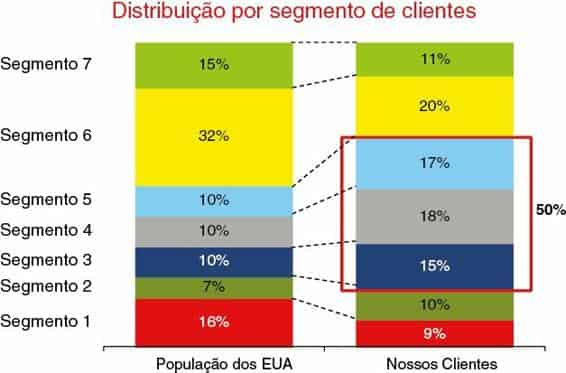
FIGURA 5.12 DESIGN SEM ESTÉTICA
Podemos usar as lições estudadas para fazer escolhas de design inteligentes.
Especificamente, vamos discutir como podemos melhorar a Figura 5.12 em relação ao uso de cor, alinhamento e espaço em branco.
A cor é usada de forma exagerada. Há cores demais e elas disputam nossa atenção, tornando difícil enfocar uma por vez. Voltando à lição sobre affordances, devemos pensar no que queremos destacar para nosso público e só usar cor lá. Neste caso, a caixa vermelha em torno dos segmentos 3 a 5, à direita, sinaliza que esses segmentos são importantes; mas há tantas coisas disputando nossa atenção que leva algum tempo para vermos isso. Podemos tornar esse processo mais óbvio e fácil, usando cor estrategicamente.
Os elementos não estão corretamente alinhados. A centralização do título do gráfico faz com que ele não esteja alinhado com mais nada no visual. Os títulos de segmento à esquerda não estão alinhados para criar uma linha limpa, nem à esquerda, nem à direita. Isso parece desleixado.
Por fim, o espaço em branco é mal usado. Há muito espaço entre os títulos de segmento e os dados, o que dificulta levar os olhos do título para os dados (tenho vontade de usar meu dedo indicador para traçar o caminho: podemos reduzir o espaço em branco entre os títulos e os dados para que isso seja desnecessário). O espaço em branco entre as colunas de dados é estreito demais para enfatizar os dados da melhor forma e está cheio de linhas pontilhadas inúteis.
A Figura 5.13 mostra como a mesma informação poderia ficar se resolvêssemos esses problemas de design.
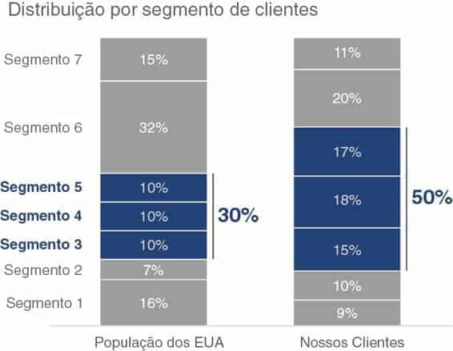
FIGURA 5.13 DESIGN ESTÉTICO
Você não estará mais propenso a passar um pouco mais de tempo na Figura 5.13? Claramente, foi dada atenção aos detalhes no design: o designer levou um tempo para obter esse resultado. Isso cria um tipo de ônus por parte do público, de gastar tempo para entendê-lo (esse tipo de contrato não existe em um design ruim). Ser inteligente nas cores, alinhar os objetos e aproveitar o espaço em branco traz um senso de organização visual ao seu design. Essa atenção à estética mostra um respeito geral por seu trabalho e seu público.
Para que um design seja eficiente, ele deve ser aceito pelo público pretendido.
Esse princípio é verdade, seja o design em questão o de um objeto físico ou de uma visualização de dados. Mas o que você deve fazer quando seu público não está aceitando seu design?
Em meus workshops, os membros do público regularmente levantam este dilema: “Quero melhorar o modo como vemos as coisas, mas quando tentei fazer alterações, meus esforços encontraram resistência. As pessoas estão acostumadas a ver as coisas de certa maneira e não querem que mexamos nisso.”.
É um fato da natureza humana a maioria das pessoas sentir certo grau de desconforto com a mudança. Lidwell et al., em Universal Principles of Design, sem tradução no Brasil, (2010), descrevem essa tendência, dos públicos em geral, de resistir ao novo por causa de sua familiaridade com o antigo. Por isso, fazer alterações significativas “no modo como sempre fazemos” pode exigir mais trabalho para ganhar a aceitação do que simplesmente substituir o antigo pelo novo.
Existem algumas estratégias que você pode usar para ganhar aceitação no design de sua visualização de dados:
Algo a considerar, se você encontrar resistência, é se a raiz do problema é que seu público é lento em relação à mudança ou se há problemas no design que está propondo. Teste isso, obtendo a opinião de alguém que não tenha interesse pessoal. Mostre sua visualização de dados. Se apropriado, mostre também os visuais anteriores ou atuais. Peça para que, por meio de seu processo mental, diga como analisa a apresentação. Do que gosta? Quais perguntas tem? Qual visual prefere e por quê? Ouvir essas coisas de terceiros imparciais pode ajudá-lo a descobrir problemas em seu design que estão levando ao desafio de aceitação que você enfrenta com seu público. A conversa também pode ajudá-lo a articular pontos de discurso que o ajudarão a obter a aceitação que você procura junto ao seu público.
Entendendo e empregando alguns conceitos de design tradicionais, nos preparamos para o sucesso na comunicação com dados. Ofereça ao seu público affordances visuais, como pistas de como interagir com sua comunicação: destaque o material importante, elimine as distrações e crie uma hierarquia visual de informações. Torne seus designs acessíveis, não complicando demais e usando texto para legendar e explicar. Aumente a tolerância de seu público em relação aos problemas do design, tornando-os esteticamente atraentes. Empregue as estratégias discutidas para ganhar a aceitação do público para seus designs visuais.
Parabéns! Agora você sabe a 5a lição do storytelling com dados: como pensar como um designer.